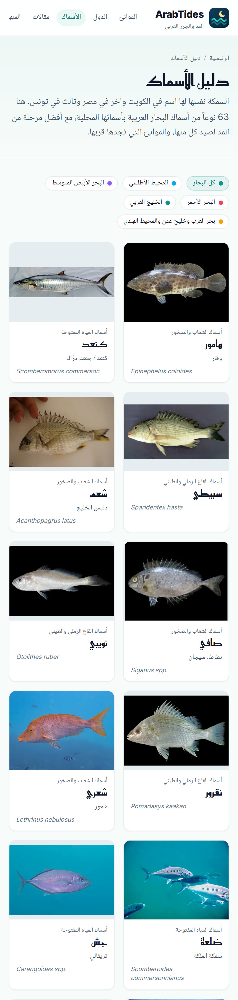

arabtides.com

كل ما يحتاجه الصياد
في موقع واحد، ومجاناً 🎣
36 ميناءً
في 22 دولة عربية 🌍
مواعيد المد والجزر 🌊
ومنحنى المد لليوم كله
تقييم الصيد لكل يوم
توقعات 7 أيام وتقويم الشهر
الشمس والقمر 🌙
وأوقات الصيد والصلاة
دليل الأسماك 🐟
63 سمكة بأسمائها المحلية
ArabTides
مجاني · بالعربية · بدون تطبيق
arabtides.com
الرابط في البايو 👆